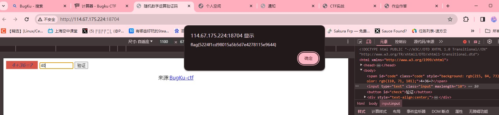
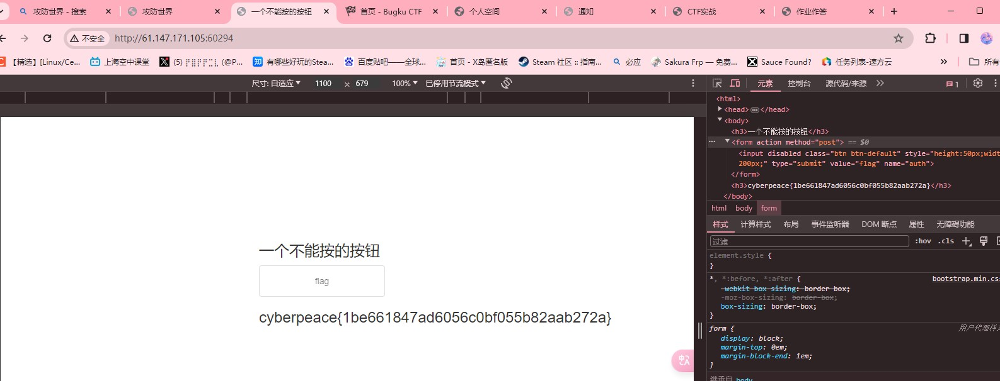
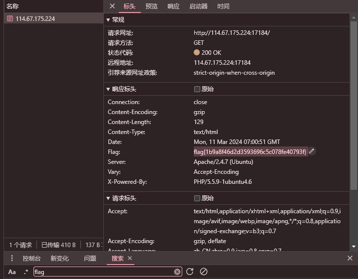
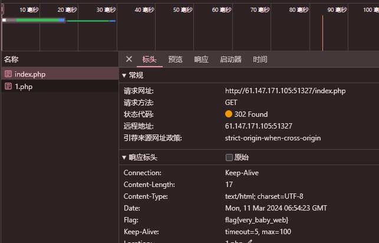
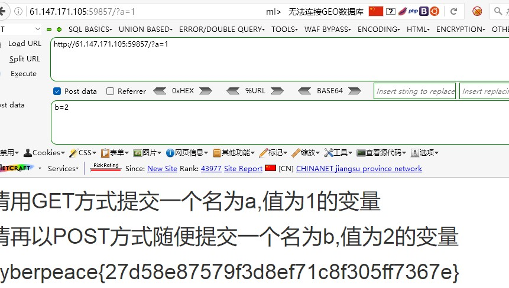
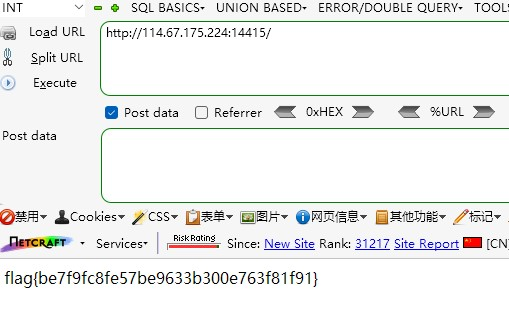
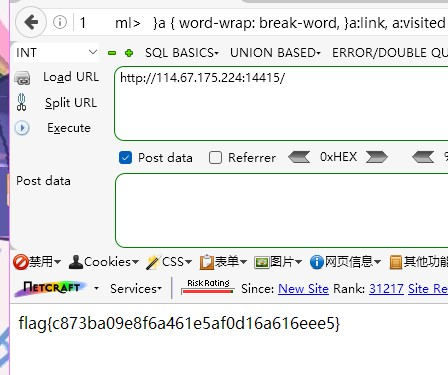
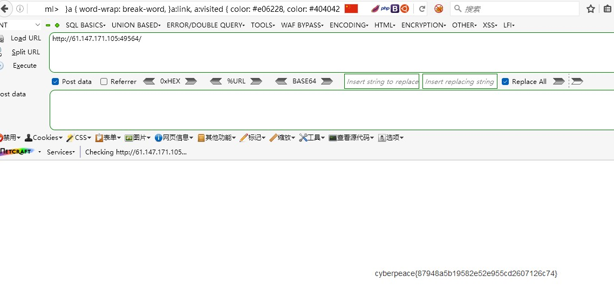
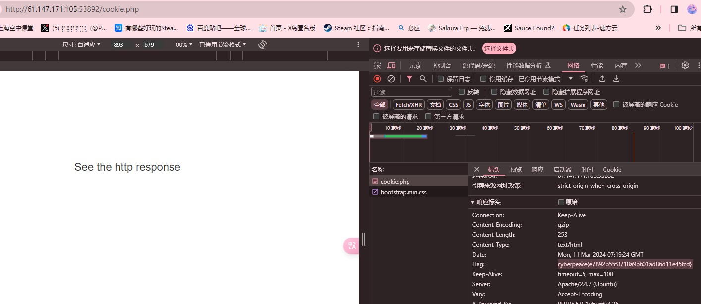

CTF实战相关2
CTF实战相关2
以web类的CTF作为范本的话
应该做的
1.检查网页元素 寻找相关提示
2.通过网络查看http标头(header)
3.burp扫描/hackbar投送信息/更改cookie
4.php相关知识
还有标头会传达的 可更改的两个信息 X-Forwarded-For 与 Referer
简单来说
X-Forwarded-For表示访问该网址的ip 例如127.0.0.1即为本地访问
Referer代表了你是从哪个网页来——例如http://www.google.com
例题
（注：这里图片只附上结果 主要是不想再开环境了）
使用了谷歌浏览器的f12功能 burpsuite 与 firefox的hackbar插件
1.BugKu-Web-计算器
检查html元素 发现页面中的答题框只允许输一个数字 无法正确回答
更改input框中限制的文字上限 成功作答 获得flag

2.攻防世界-Web新手区- disabled_button
检查html元素 发现页面中显示“一个不能按的按钮” 多半按下后才能显示flag
删去按钮属性框中的disabled 按下按钮 获得flag

3.BugKu-Web-头等舱
检查页面 f12发现无标注隐藏元素 根据题目名“头等舱” 通过f12-网络
f5刷新后从网络标头中找到flag

4.攻防世界-Web-baby_web
检查页面 发现无隐藏元素 根据作者提示想想主页面是什么访问目录index.php
然而index.php也无任何隐藏
最终 通过f12-网络 f5刷新后从该页面的网络标头中找到flag

5.（BUUCTF）极客大挑战-2019-Havefun
检查页面 元素中有标注代码 该页面GET方式接收cat参数
当cat=dog时会发生什么 于是传参 获得flag
6.攻防世界-Web新手区-get_post
检查页面 要求你通过GET方式提交a=1
提交后又叫你通过POST方式提交b=2
照做即可 获得flag

7.BugKu-Web-程序员本地网站
检查页面 页面显示请以本地ip访问
使用burpsuite监听该网页 并将X-Forwarded-For标头改为127.0.0.1
获得flag

8.BugKu-Web-你从哪里来
检查页面 页面显示are you from google？
判定与referer标头有关 通过burpsuite监听页面
将referer标头改为http://www.google.com
获得flag

9.攻防世界-Web新手区-xff_referrer
检查页面 页面显示ip必须为123.123.123
使用burpsuite监听该网页 并将X-Forwarded-For标头改为123.123.123.123
页面变为“必须来自https://www.google.com”
通过burpsuite监听页面 将referer标头改为http://www.google.com
获得flag

10.攻防世界-Web新手区-cookie
检查页面 页面显示“你知道什么是cookie吗？”
f12-网络 查看页面cookie 发现信息look here=cookie.php
于是访问cookie.php 发现信息 see the http response
查看标头 获得flag
